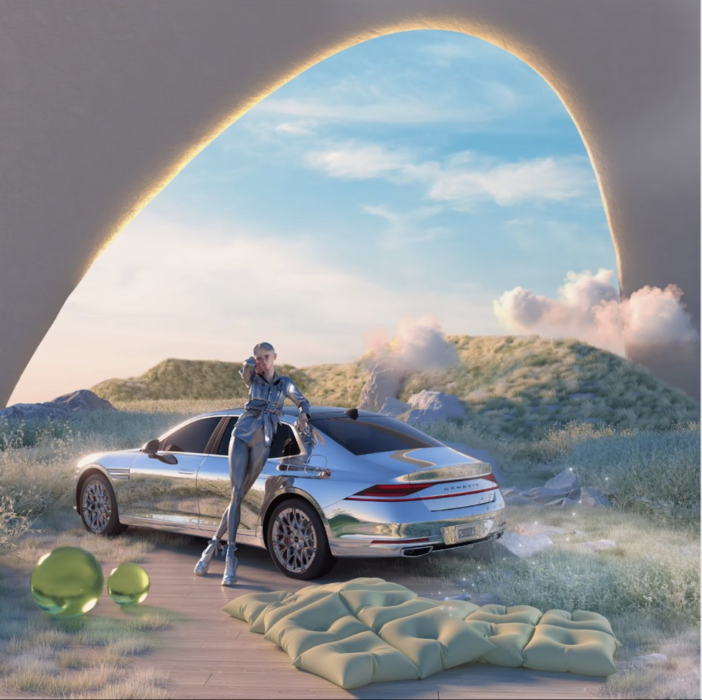
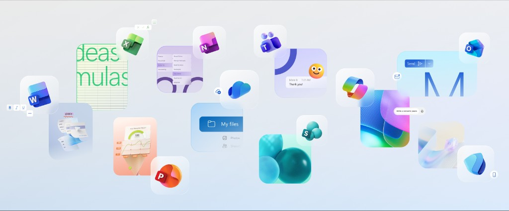
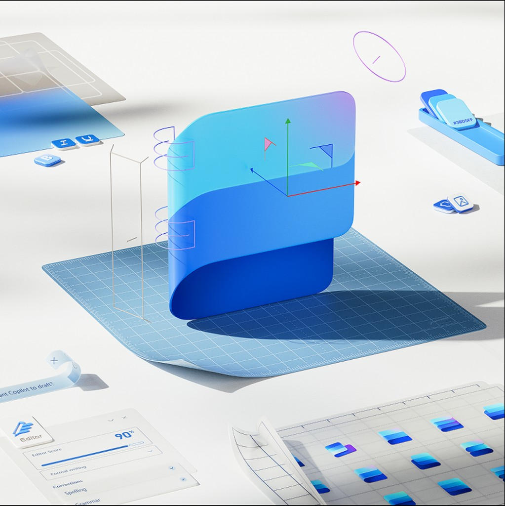
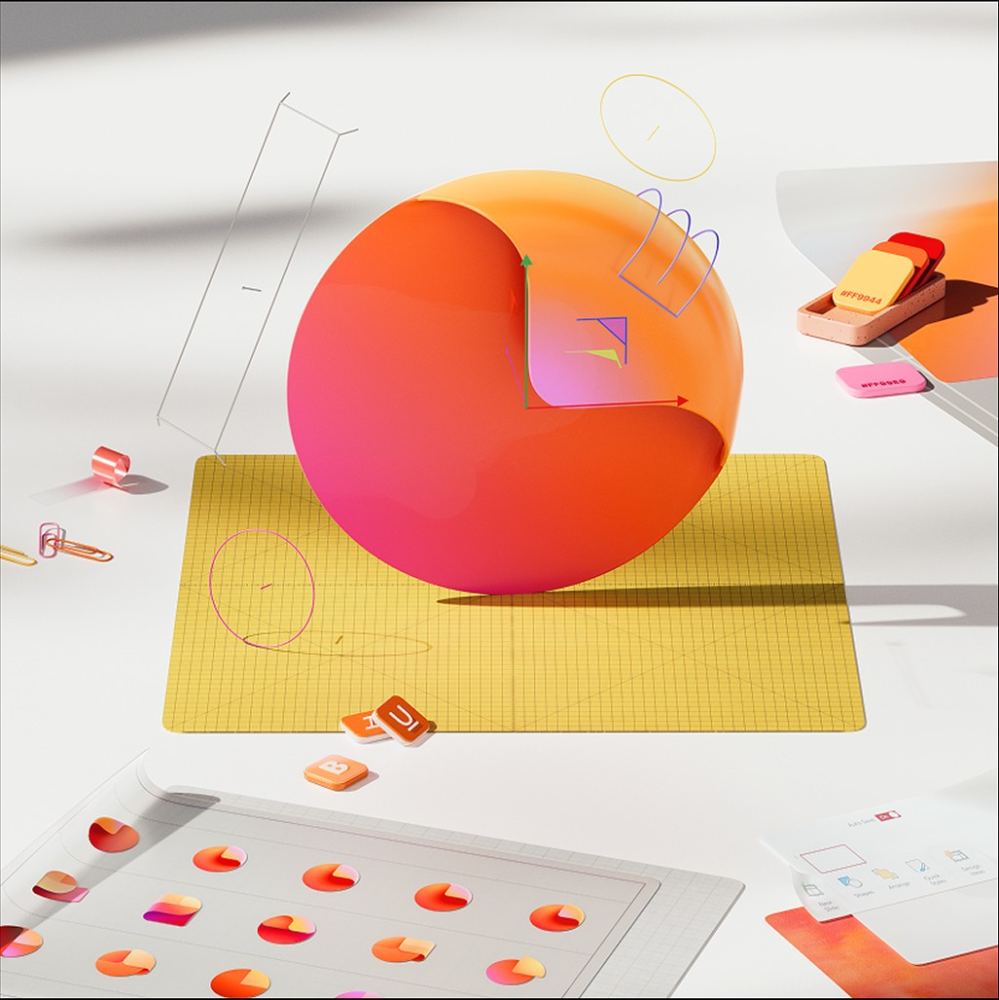
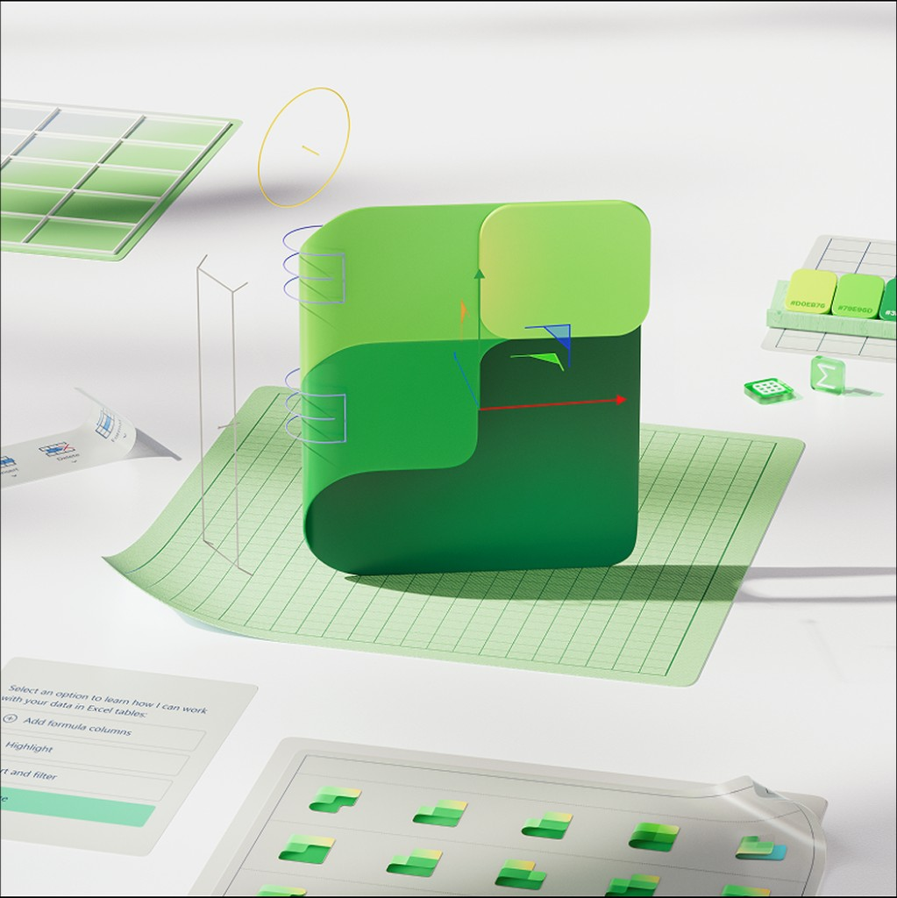
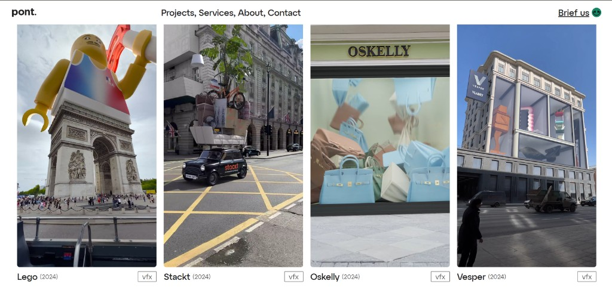
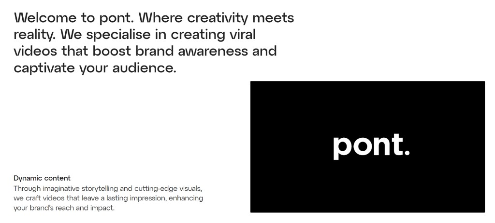

Даша делает CGI для pont.design и 3D для Rarible. В работе ищет метафору продукта и говорит про инклюзивный визуал на примере THX.
Как ты для себя определяешь культуру дизайна? Что в это понятие входит – принципы, ценности, ритуалы внутри команды, подход к принятию решений, ответственность, стремление к красоте – или что-то иное?
Для меня культура дизайна – это ценности и практики, которыми я руководствуюсь ежедневно, создавая визуальную сторону продукта. Набор важных для меня ценностей очень прост:
В первую очередь – прозрачный и честный диалог с клиентом, из которого формируется понимание бренда и его задач.
Логика и системность. Любое решение, которое я принимаю, должно быть логически аргументировано и отвечать задаче, которую ставит перед собой продукт. Если подход бессистемен и вы не можете аргументировать свою позицию, вы просто делаете красивые картинки.
Баланс между формой и функцией – в своей работе я стараюсь выдерживать ясные визуальные решения, которые поддерживают цели клиента.
Самое главное для меня – быть открытым к новому опыту и не бояться идти на риск, но в рамках безопасного эксперимента.
Почему CGI-дизайн и что в нём тебя больше всего драйвит сейчас? Интересно на примере 1–3 кейсов, которые особенно повлияли на твоё восприятие сферы или подход.
Мне всегда нравилось искать в тех или иных визуальных решениях ту самую «метафору», которая раскрывает суть продукта. За это я так сильно люблю сферу CGI, которая позволяет рассказать о продукте с совершенно разных креативных позиций и сократить расстояние между продуктом и потенциальным пользователем.
Если говорить о том, что сформировало моё видение и вкус, то нельзя не упомянуть 3D-художницу Smeccea, чьи яркие, полные жизни и красок образы перевернули моё представление о том, какой может быть CGI-реклама.
То, что вдохновляет меня сейчас, – это работа дизайн-команды Microsoft. Обновление Office 365, стиль Copilot – за всем этим чувствуется единая работа команды и большая любовь и уважение к наследию компании.





Какие рабочие практики или ритуалы остаются неизменными? Что поддерживает и заряжает больше всего? Есть ли повторяющийся паттерн, который ты замечаешь?
В моей работе много переменных, но некоторые вещи остаются неизменными. В первую очередь – открытость к диалогу, только так можно понять, что движет человеком по ту сторону продукта. Также неизменным остаётся системный подход к проектам в целом: весь процесс разбит на определённые шаги, которые позволяют избежать хаоса.
Всю рабочую деятельность я веду из дома, поэтому для меня неизменно наличие комфортного пространства. Удобный рабочий стол, большой экран и эргономичное кресло – неотъемлемая часть моего домашнего офиса. Из ритуалов могу выделить прогулки с моей собакой в перерывах: свежий воздух и физическая активность отлично влияют на креативный процесс.
Если говорить о том, что поддерживает и заряжает, то это, безусловно, позитивная обратная связь на проделанную работу. Самое лучшее для меня – видеть, что человек улавливает метафоры и смыслы, заложенные мной в визуал.
Расскажи про свой текущий подход к проектам. Как переводишь ценности в дизайн-решения? На что опираешься в первую очередь, а что остаётся вторичным? В центре внимания – вижен и большая идея, красота, создание чего-то нового для индустрии, виральность или что-то ещё?
Как я упомянула ранее, любой проект, который я беру в работу, раскладывается на определённые шаги, что позволяет уделить внимание в равной степени как форме, так и функции. Сфера CGI даёт широкий простор для фантазии, но первично – баланс между креативом и бизнес-задачей.
В центре внимания визуальных решений, созданных мной, – инклюзивный подход. Дизайн не должен создавать пропасть между продуктом и пользователем; инклюзивный визуал сближает стороны, вызывая позитивный эмоциональный отклик на продукт.
Последний проект, над которым я работала, как раз иллюстрирует мою идею про инклюзивность:
Клиент: финтек-приложение THX Задача: создание приложения для аудитории, которая никогда не занималась трейдингом; визуальное оформление, лишённое излишней сложности, которая присуща профессиональным трейдинг-платформам.
Проведя исследование и несколько раундов итераций с командой продакт-дизайна, мы пришли к финальной концепции, которая отстраивала наш визуал от всех существующих трейдинг-продуктов и получила позитивный фидбек от потенциальных пользователей.
Работая в команде pont., что считаешь качеством и как это артикулируешь. Что такое хороший дизайн?
Я пришла в студию Pont в 2023 году и за эти несколько лет поучаствовала в создании 3D-контента как для российских компаний, так и для зарубежных брендов.
Студийная работа учит тебя таким важным вещам, как соблюдение дедлайнов, работа в команде, быстрый поиск смыслов и идей, которые будут отражены в работе, а также умению в сжатые сроки создавать контент, который будет отвечать запросу клиентов.
Залогом качества считаю сильный арт- и креатив-дирекшн студии Pont, который ведёт команду в сторону соблюдения баланса между искусством и бизнес-задачами, быстрой и открытой коммуникации с клиентами и поддержанию здоровой атмосферы в команде.


Крафт и технологии (AI) – видишь ли ты конфликт между этими понятиями или они усиливают друг друга?
Для меня связь крафта и AI – это как две стороны одной медали: технологии дают скорость, масштаб, позволяют генерировать концепты и варианты их реализации, а крафт несёт в себе глубину и эмоциональную связь между творцом и его продуктом, которой не достичь, используя только лишь AI.
Думаю, что ценность человека в проектировании продукта и его визуальной стороны всё ещё высока: критическое мышление, понимание бренда и его пользователей, закладывание тех или иных эмоций в продукт – всё это не может быть сделано без человека.
Линки
О практике
Даша Макурина – дизайн-тимлид Авито. Ex 3D-дизайнер Rarible, CGI-дизайнер студии pont.design.